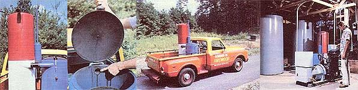

[1] The updated gasifier is lighter, more compact, and in many ways more practical than its predecessor. [2] Condensed and filtered wood gas goes directly to the modified carburetor through this outlet tube. Note the woven filter medium below. [3] We've realized an improvement in performance and mileage with the new apparatus, as well. [4] The redesigned stationary components take up a minimum of floor space, and thus leave plenty of sheltered area for scrap lumber storage ...or for wood heating and drying equipment.